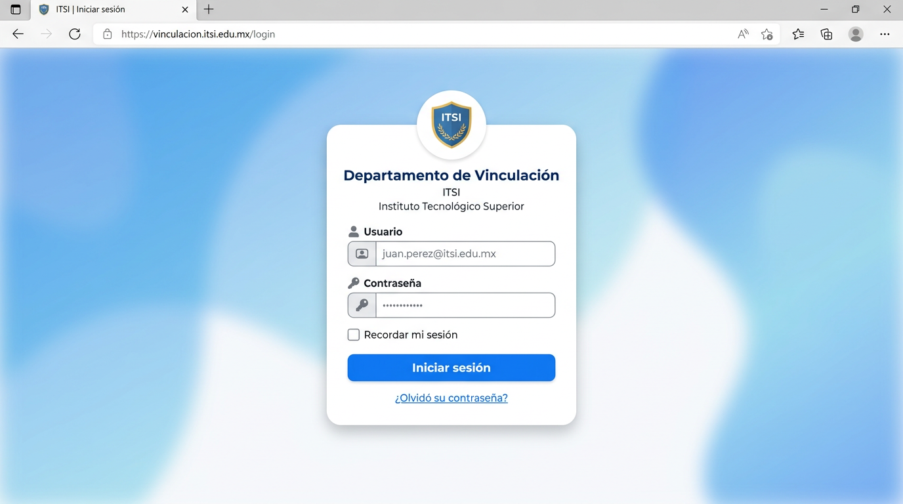
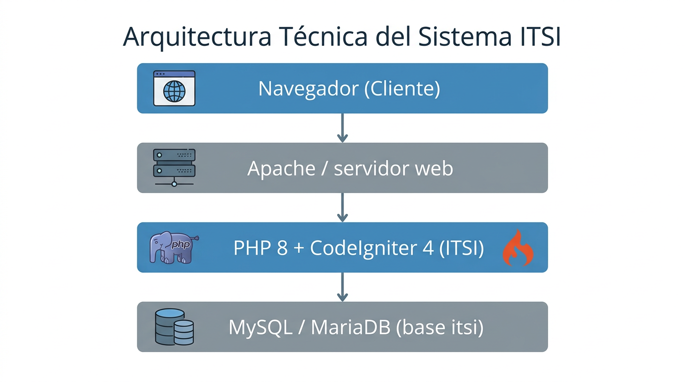
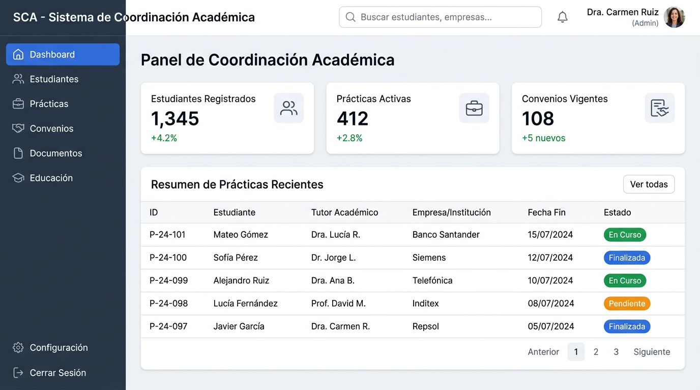
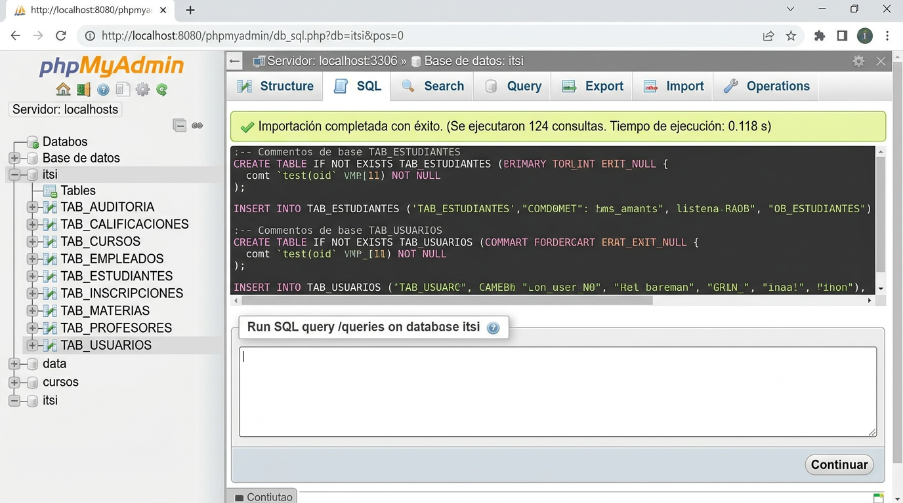

ITSI — Sistema web de vinculación con la sociedad
(prácticas preprofesionales, servicio comunitario, educación continua y gestión documental)
docs si está disponible.
ITSI es una aplicación web orientada al Departamento de Vinculación (o unidad equivalente) de una institución educativa.
Permite gestionar prácticas preprofesionales, servicio comunitario, convenios con entidades receptoras,
documentos asociados a cada modalidad, actividades de educación continua, evaluaciones, asistencias,
instructores y docentes tutores, así como perfiles y cuentas de usuario. El acceso está segmentado por roles
(coordinación, docente, estudiante), cada uno con rutas y controladores bajo prefijos coord, docente y estudiante.
La autenticación centraliza en AuthController; existen flujos de recuperación de contraseña por correo
(configuración SMTP en app/Config/Email.php o variables .env).

app/Config/Auth.php y estilos en public/login/authstyles.css.
ITSI sigue el patrón MVC de CodeIgniter 4: el navegador envía peticiones HTTP al servidor web; el punto de entrada público es
public/index.php, que delega en el enrutador. Los controladores orquestan la lógica, los modelos acceden a MySQL
y las vistas (PHP + HTML + CSS/JS) generan la respuesta. Algunas funciones auxiliares residen en app/Services y app/Helpers.

public/ (o virtual host apuntando a public).app/Config/Routes.php resuelve el controlador y método.app/Models) y devuelven vistas (app/Views) o redirecciones.itsi, definida en el script bddITSI.sql.
app/Views/coord/.| Componente | Tecnología / versión | Notas |
|---|---|---|
| Lenguaje | PHP ^8.1 | Requisito de CodeIgniter 4 y de public/index.php |
| Framework | CodeIgniter 4 | Enrutamiento, sesiones, vistas, capa de base de datos |
| Base de datos | MySQL 5.7+ / MariaDB 10.2+ | Charset utf8mb4, collation indicada en el script SQL |
| Servidor (desarrollo) | Apache (XAMPP) | Document root habitual: htdocs/ITSI/public o alias |
| Frontend | Bootstrap, Bootstrap Icons, JS en vistas | Assets en public/login, public/sistema, etc. |
| Librerías PHP | phpoffice/phpspreadsheet, tecnickcom/tcpdf | Exportaciones Excel y generación de PDF en informes |
| Gestión de dependencias | Composer | composer.json en la raíz del proyecto |
Directorios principales (relativos a la raíz del repositorio ITSI):
| Ruta | Propósito |
|---|---|
app/Config/ | Configuración: App.php (baseURL), Database.php, Routes.php, Email.php, Filters.php, etc. |
app/Controllers/ | Controladores; subcarpetas coord, docente, estudiante por rol |
app/Models/ | Modelos Active Record contra tablas TAB_* |
app/Views/ | Vistas PHP por rol y módulo |
app/Services/, app/Helpers/, app/Libraries/ | Lógica reutilizable (p. ej. asistencia, email, notificaciones) |
app/Filters/ | Filtros HTTP personalizados (p. ej. EstudianteAsistenciaObligatoriaFilter) |
public/ | Front controller index.php, assets estáticos, carpeta de subidas si aplica |
writable/ | Logs, caché, sesiones, debugbar; debe ser escribible por el servidor web |
vendor/ | Dependencias Composer (no versionar en producción sin composer install) |
bddITSI.sql | Script completo: creación de BD itsi, tablas y datos iniciales |
php y composer estén en el PATH.htdocs/ITSI (o la ruta que use su servidor).composer install para generar vendor/.app/Config/App.php → $baseURL a la URL real (p. ej. http://localhost/ITSI/public/).app/Config/Database.php o mediante archivo .env según convención CI4.app/Config/Email.php o variables de entorno documentadas en ese archivo.writable/debugbar/.
La instalación consiste en disponer del código, instalar dependencias PHP, importar el esquema SQL y alinear la configuración (baseURL, BD, correo).
El detalle paso a paso se amplía en la Parte II — Guía de instalación.
El archivo bddITSI.sql crea la base itsi y todas las tablas (prefijo conceptual TAB_).
Incluye comentarios sobre importación: si una herramienta gráfica falla por comprobación de claves foráneas, importe por línea de comandos o desactive temporalmente esa opción.
En aplicación, el grupo por defecto está en app/Config/Database.php (database = 'itsi', driver MySQLi, puerto 3306).
La collation en configuración puede ser utf8mb4_general_ci; el script usa utf8mb4_unicode_ci a nivel de BD — mantener UTF-8 de extremo a extremo.

Ejemplo de importación por consola (ajuste usuario y ruta):
mysql -u root -p < "c:\xampp\htdocs\ITSI\bddITSI.sql"public/, no a la raíz del proyecto.writable/debugbar innecesario en producción si se desea); ejecutar composer install --no-dev --optimize-autoloader en el servidor.writable/ y en rutas de subida de archivos definidas en los controladores de documentos.baseURL con HTTPS en producción; desactivar o ajustar DBDebug y toolbar de depuración.bddITSI.sql o desde backup coordinado (BackupCoordController si está en uso).app/Config/Filters.php (p. ej. forcehttps en entornos con TLS terminado en proxy).forcehttps provoca redirecciones no deseadas sin HTTPS; en ese caso ajuste la configuración solo para el entorno correspondiente.
Esta guía permite a una persona con conocimientos básicos de Windows y XAMPP instalar y ejecutar ITSI en un equipo de desarrollo. Está integrada en el mismo documento que el manual técnico; puede extraerse como anexo si lo necesita su institución.
| Requisito | Detalle |
|---|---|
| Sistema operativo | Windows 10/11 (esta guía), Linux/macOS equivalente con Apache+Nginx+PHP+MySQL |
| RAM | Mínimo 4 GB recomendado para XAMPP + navegador + MySQL |
| XAMPP | Con Apache y MySQL/MariaDB |
| PHP | 8.1 o superior (incluido en XAMPP reciente) |
| Composer | getcomposer.org |
| Navegador | Chrome, Edge o Firefox actualizado |
| Opcional | phpMyAdmin (incluido en XAMPP) para importar SQL |
ITSI).composer installvendor/ y que no haya errores de extensión PHP faltante.app/Config/App.php y asigne public string $baseURL a la URL desde la que accederá, por ejemplo:
public string $baseURL = 'http://localhost/ITSI/public/';app/Config/Database.php (o use .env) con usuario, contraseña y nombre de base itsi.app/Config/Email.php (SMTP recomendado en Windows).app/Config/Auth.php (loginBackgroundImage), relativo a public/.bddITSI.sql (desde phpMyAdmin: Importar, o desde consola como en la sección 7).itsi existe y contiene tablas TAB_USUARIOS, TAB_ESTUDIANTES, etc.baseURL, por ejemplo:
http://localhost/ITSI/public/writable/logs/ y permisos de escritura en writable/.Fin del documento. Las figuras 1–4 son ilustraciones representativas del aspecto del sistema y de las herramientas de base de datos; sustitúyalas por capturas reales de su entorno si el manual se entrega oficialmente a la institución.